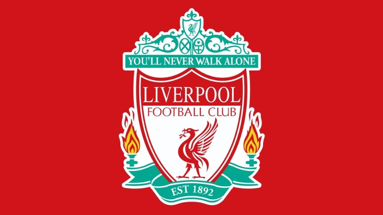
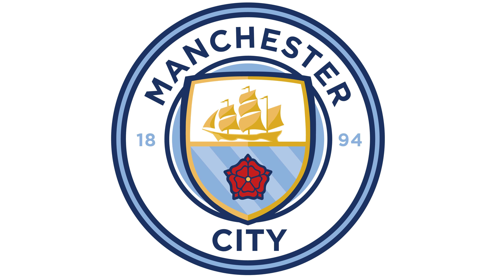
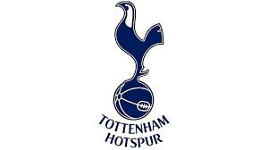

The Premier League is filled with clubs with centuries and decades of history between them. On this page we look at a few details on the 'big 6'. These clubs are the current powerhouses of the Premier League.
Manchester United
Manchester United Football Club is a football club based in Old Trafford, Manchester. Also known as the Red Devils, the club was originally known as Newton Heath LYR Football Club when they were founded in 1878. They have won the joint-record number of trophies in English club football which includes 20 Premier League Table. Although they are not the powerhouse they once were, many are hopeful they will return to their old self.

Liverpool
Liverpool Football Club is a football club based in Liverpool, England. They are the joint-most successful club in English football, winning 19 League titles. They are the most successful English club in terms of European trophies as they have won 6 Champions League trophies, the most recent coming in 2019. They are widely considered by many as the best club in the world at the moment as they play an exciting brand of football.

Arsenal
Arsenal Football Club is a football club based in Islington, London. They are the third most successful club in English Football and the only team in the history of the League to go unbeaten for all 38 games of the season, a truly historic achievement. ALthough Arsenal have dropped off massively compared to the teams of the past, they have a young core and there is a bright future ahead.

Chelsea
Chelsea Football CLub is a football club based in Fulham, West London. They are the fourth most successful club in English Football and are the current European champions. They won the Champions League last year beating rivals Manchester City in the final. They have one 6 league titles due to a financial takeover and complete rebuild in 2005. Although they are good now, they are in a bit of legal trouble due to their Russian owner, Roman Abramovich.

Manchester City
Manchester City Football Club is a football club based in Manchester, England. Founded in 1880 as St.Mark's, it became Manchester City in 1894. They are the fifth most successful club in England. They are also the reigning Premier League Champions and look to add another one this season. In recent times, Manchester City have arguably been the most dangerious side in the world winning 3 of the last 4 League titles. The only thing they desire now is the Champions League

Tottenham Hotspur
Tottenham Hotspur Football club, more commonly known as Tottenham or Spurs, is a football club based in Tottenham, London. Tottenham are considered the worst out of the big 6 because despite a star studded lineup which includes arguably one of the best duos in the sport, Tottenham have repeatedly failed to win a trophy in recent times and are still looking for silverware.
